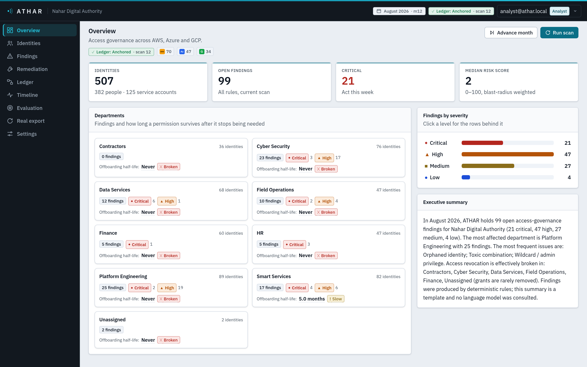
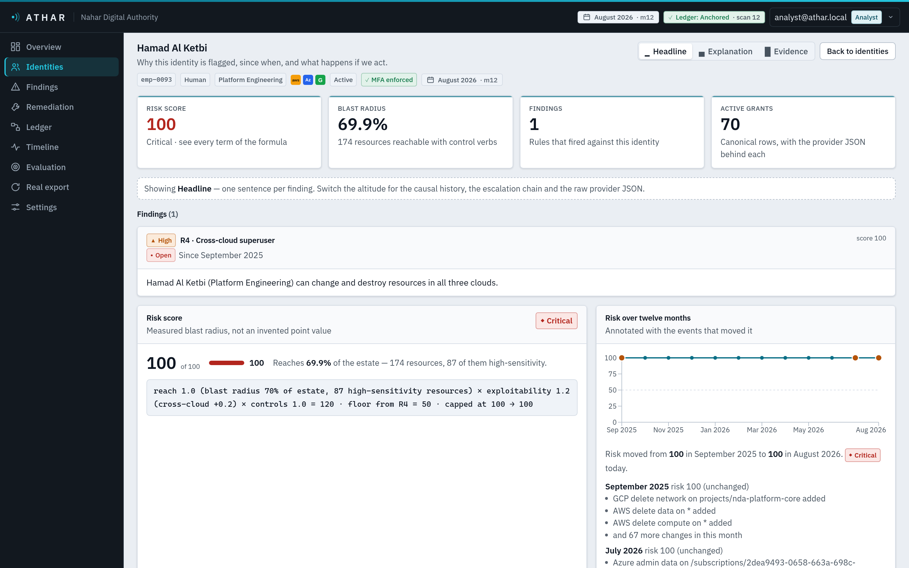
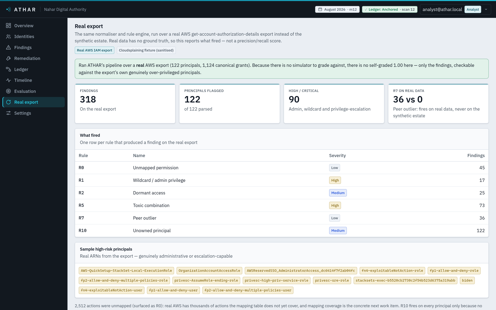
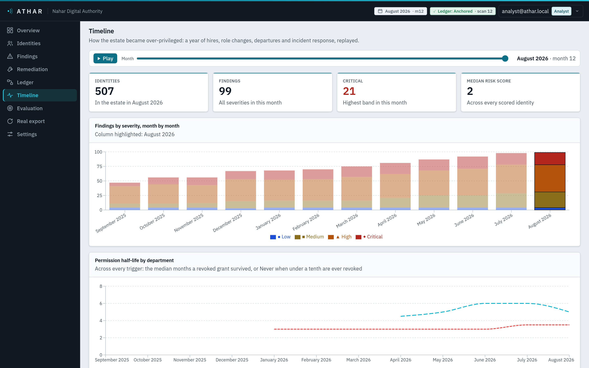

One model across AWS, Azure and GCP. Risk scored by measured blast radius, every finding backed by evidence, every scan anchored to a ledger a regulator can verify without trusting us.
Permissions drift faster than anyone revokes them — and the riskiest identity is invisible to every single cloud.
Granted at every hire, role change and incident. Almost never taken away.
The estate does not know a person left in March, or a project shut in June.
Admin in AWS + Azure + GCP. In no single console. Spreadsheet reviews miss it every quarter.
382 people · 125 service accounts · twelve months of simulated drift. Who, exactly, can do what?

The rule engine decides. The model only explains and drafts. Proposals are validated against the rules before a human sees them — it cannot act outside the fence.
Headline for a director. Explanation for an analyst. Raw provider JSON, score line-items and the escalation chain for an engineer. Every finding, every time.
Every scan and decision anchored to a Merkle root. A regulator recomputes it and checks the chain — proving a report is unedited without trusting us.
The through-line: the engine is accountable, the finding is explainable, the record is verifiable. That is what a government regulator actually buys.

Said out loud: on synthetic data the ground truth is written by the same simulator the exports come from — so a perfect score is a pipeline-recovery check, not proof of real-world accuracy. Saying so is the point. So we ran it on real data.

Talks to ATHAR’s own API, so it inherits every RBAC, evidence and ledger guarantee.
Enforced by the API’s roles, not a prompt.
Look and suggest — never decide or act.

Runs offline, UAE-residency aware, control-mapped. No data leaves the estate.
Fenced AI, deterministic decisions, an audit record you can verify yourself.
Your existing AI and tooling query it over MCP — no rip-and-replace.
Give us the exports — ATHAR gives you the record.
Every permission leaves a trace.